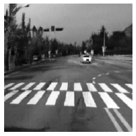

Given a grayscale image, it is a daunting task, even for a human, to visualize it in color. See Figure 1 for examples. However, a human may try to find semantic clues like texture and world knowledge to assign colors to objects. For example, the grass is mostly green, or the sky is mostly blue. But these clues may also fail sometimes, as shown in Figure 1(middle). Thus, in this work, the focus was on assigning a plausible set of colors to the Image, which may or may not be the same as the ground truth.
Fig:1 GrayScale Images and Corresponding Color
The primary motivation behind pursuing this problem was that many images do not have color information. Also, the problem of Colorization is self-supervised and does not require a pair-wise dataset.
The aim is to solve it in generative fashion, such that if we feed the same grayscale Image to the network k times, it may generate different output each time. A generative network’s benefit is that it may color the cloth’s stripes (Figure 2), gray or red.

Fig:2 Plants in the left Image are entirely green, not in the right
The solution is based on PixColor, which is state of the art autoregressive generative neural networks for Colorization, i.e., the output of $i^{th}$ pixel is not just conditioned on the latent representation of the grayscale Image, X but also on the previous outputs, $[i-t, i-t+1, i-t+2\ …\ i-1]$ where t denotes the receptive field.
Given $X \in [H, W]$, we first extracts the features $Y_1$ using Resnet-101 of size $[\frac{H}{4}, \frac{W}{4}, 1024]$. These features are then passed into an adaption network and use three convolution layers to adapt the features required by pixelcnn. The output from the adaption network is of size $[\frac{H}{4}, \frac{W}{4}, 64]$, and is fed into conditional pixelcnn. It masks the weights of a convolutional layer to prohibit pixel $x_i$ from using any information about the future samples $(x_{i+1:N})$.
Training is the same as that of any other end-to-end trainable architecture (as ground truth data was used under teacher training mechanism), but during testing, for each pixel $i$, the class is sampled from a multinomial distribution defined by the softmax output of the network.
Fig:3 Result of Colorization Algorithm
The first seven images in carousal(at the top) are the PixColor algorithm results with key insights from each of the Images.
Extension towards I.R. images
I decided to continue working on image colorization during my next semester, focusing on reducing the artifacts and improving larger objects’ coloring. The output from pixelcnn is given to a fully convolutional network, acting as a denoiser, inspired by Tacotron, a source synthesis architecture. Fig:4 Correction of Green Artifact as shown in left Image
After that, my professor suggested applying image colorization on I.R. images. In applications under low lighting, I.R. cameras come in handy, but interpreting I.R. images is not straightforward for a human, and hence translating to RGB improves its understandability. I.R. images introduced two challenges, i) it is no longer a self-supervised task and requires a parallel dataset, ii) it is computationally expensive since with grayscale images, we can learn the color information at less spatial resolution(Figure 5-middle) and upscale it, with minimal impact on visual quality but with I.R. images, we need to learn Luminicance too(Figure 5-bottom).
| Input Image | |
|---|---|
| Color channels downscaled and Interploated |
 |
| All channels are downscaled and interpolated |
Figure 5: Effect of downsampling on image quality
For I.R. to RGB, I did not directly use PixelColor to generate color images but first used ImageGAN with wassterin loss. It ended up being blurry because we were averaging the loss over all of the pixels (Table - 1).
| Input - IR | Target - RGB | Output - RGB |
|---|---|---|
Table:1 Blurry Output when GAN’s are not used
An I.R. image is first passed through GAN, which generates grayscale output followed by PixColor for sampling RGB from the generated grayscale.
| Input I.R. | Target GrayScale | Generated GrayScale |
|---|---|---|
|  | ||
 |
||
Table 2: Output of ImageGAN
The ImageGAN model produced close to ground truth for many situations (Table 2 first four rows). Still, the model’s performance deteriorated when uncommon objects were present in the I.R. image, like a person on the cycle or person themselves, highlighting the importance of richer data sources.
The last five images in carousal(at the top) are the results of the I.R. to color algorithm with key insights from each of the Images.
Datasets
The ADE20K scene parsing dataset was used for PixColor training; it has 20K training and 1.5k validation samples. Also, there was a pretrained resnet101 network, which helped speed up the training process. For I.R. to RGB translation, the kaist multispectral benchmark was used. It is divided into multiple files, with each file consisting of over 10000 images, but it lacks the spatial resolution. I tested six different datasets that have pair-wise I.R. and RGB images and found it to be most aligned.
Training and Analysis
PixColor was trained for 50 epochs, in 100% teacher-training mechanism, i.e. during training pixelcnn autoregressive considers ground truth samples as previous t inputs. The ImageGAN was trained for 150 epochs, I stopped after 150 epochs due to computation constraints. Evaluating generative models is very hard, that’s why I tested the color distribution generated by the PixColor and observed biases towards the brown color which was present in the ADE20k data itself.
Currently, I am studying more about GANs to train them effectively with fewer data points, if you have any questions or suggestion, please let me know on Twitter or instagram.
References
- Guadarrama, Sergio, et al. “Pixcolor: Pixel recursive colorization.” arXiv preprint arXiv:1705.07208 (2017).
- Salimans, Tim, et al. “Pixelcnn++: Improving the pixelcnn with discretized logistic mixture likelihood and other modifications.” arXiv preprint arXiv:1701.05517 (2017).
- Oord, Aaron van den, et al. “Conditional image generation with pixelcnn decoders.” arXiv preprint arXiv:1606.05328 (2016).
- Zhou, Bolei, et al. “Scene parsing through ade20k dataset.” Proceedings of the IEEE conference on computer vision and pattern recognition. 2017.
- Hwang, Soonmin, et al. “Multispectral pedestrian detection: Benchmark dataset and baseline.” Proceedings of the IEEE conference on computer vision and pattern recognition. 2015.
- Wang, Yuxuan, et al. “Tacotron: Towards end-to-end speech synthesis.” arXiv preprint arXiv:1703.10135 (2017).
- Arjovsky, Martin, Soumith Chintala, and Léon Bottou. “Wasserstein generative adversarial networks.” International conference on machine learning. PMLR, 2017.
- Isola, Phillip, et al. “Image-to-image translation with conditional adversarial networks.” Proceedings of the IEEE conference on computer vision and pattern recognition. 2017.